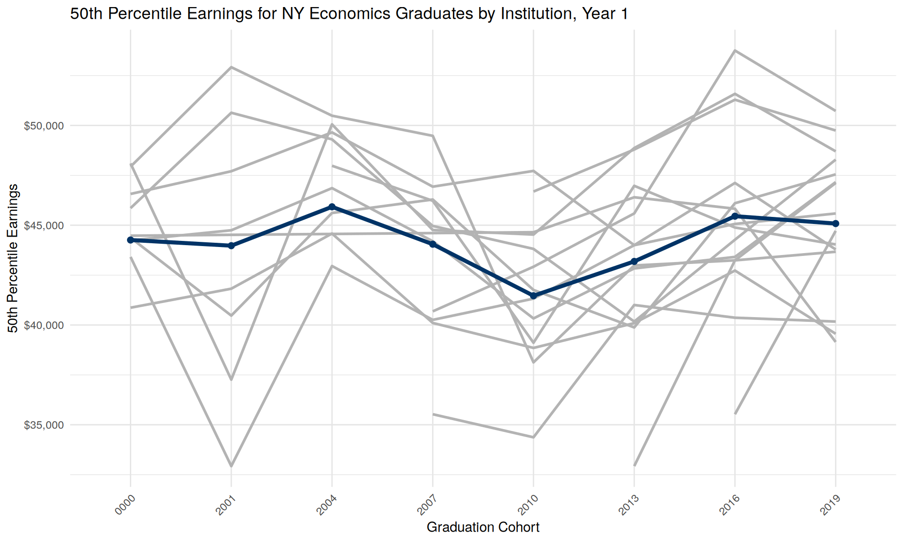

# Constants
STATE <- "ny"
BASE_URL <- "https://lehd.ces.census.gov/data/pseo/latest_release/"
SCHEMA_URL <- "https://lehd.ces.census.gov/data/schema/latest/"
# Read New York earnings data (gzipped CSV)
earnings_url_ny <- paste0(BASE_URL, STATE, "/pseoe_", STATE, ".csv.gz")
newyork_earnings <- read_csv(earnings_url_ny,
col_types = cols(
institution = col_character(),
degree_level = col_character(),
cipcode = col_character(),
grad_cohort = col_character()
))New York PSEO Earnings Analysis
Introduction
This document analyzes earnings data from the U.S. Census Bureau’s Post-Secondary Employment Outcomes (PSEO) dataset for New York state. The analysis focuses on institutional data and earnings outcomes for economics graduates at the bachelor level.
Data Setup
Part 1: Economics Graduates Earnings Analysis for NY institutions
Definitions from PSEO:
Year Post-Graduation
For all post-secondary graduates, the first year post-graduation is defined as the first calendar year following their graduation year. So for a student who graduates in May of 2005, year one begins in January of 2006, year five in January 2010, etc.
Earnings
Earnings are total annual earnings for attached workers from all jobs, converted to 2022 dollars using the CPI-U. For the annual earnings tabulations, we impose two labor force attachment restrictions. First, we drop graduates who earn less than the annual equivalent of full-time work at the prevailing federal minimum wage. Additionally, we drop graduates with two or more quarters with no earnings in the reference year. These workers are likely to be either marginally attached to the labor force or employed in non-covered employment.
Graduate Earnings are available at the 25th, 50th, and 75th percentiles, one, five, and 10 years after graduation.
In the following, I focus on Year 1 earnings at the median.
# Read institution labels from schema
label_url <- paste0(SCHEMA_URL, "label_institution.csv")
institution_labels <- read_csv(label_url,
col_types = cols(institution = col_character()))
# Read degree level schema
degree_level_schema <- read_csv(paste0(SCHEMA_URL, "label_degree_level.csv"),
col_types = cols(.default = col_character()))
# Read CIP code schema
cip_schema <- read_csv(paste0(SCHEMA_URL, "label_cipcode.csv"),
col_types = cols(.default = col_character()))
# Read Status code schema
status_schema <- read_csv(paste0(SCHEMA_URL, "label_flags.csv"),
col_types = cols(.default = col_character()))
cat("Degree level 05 corresponds to:",
degree_level_schema$label[degree_level_schema$degree_level == "05"], "\n")Degree level 05 corresponds to: Baccalaureate cat("CIP code 45.06 corresponds to:",
cip_schema$label[cip_schema$cipcode == "45.06"], "\n")CIP code 45.06 corresponds to: Economics # Filter for Economics graduates at bachelor level (degree level 05)
# Using strict Economics CIP code '45.06'
econ_cip_codes <- "45.06"
all_newyork_grads <- newyork_earnings %>%
filter(degree_level == "05",
cipcode %in% econ_cip_codes) %>%
# add flags
mutate(flag = as.character(status_y1_earnings)) %>%
left_join(status_schema) %>%
rename(flag_y1_earnings = label) %>%
# Add institution names
left_join(institution_labels, by = "institution") %>%
rename(`Institution Name` = label) %>%
select(`Institution Name`,y1_p50_earnings, degree_level, cipcode, grad_cohort,
y1_grads_earn, flag_y1_earnings, institution)
kable(all_newyork_grads |> filter(grad_cohort==2019), caption = "50th Percentile Earnings for NY Economics Graduates (Bachelor Level, 2019 cohort)")| Institution Name | y1_p50_earnings | degree_level | cipcode | grad_cohort | y1_grads_earn | flag_y1_earnings | institution |
|---|---|---|---|---|---|---|---|
| Institutions in New York | 45084 | 05 | 45.06 | 2019 | 3321 | OK | 36 |
| CUNY Brooklyn College | NA | 05 | 45.06 | 2019 | NA | Value suppressed because it does not meet US Census Bureau publication standards. | 00268700 |
| City College of New York - CUNY | 48288 | 05 | 45.06 | 2019 | 203 | OK | 00268800 |
| CUNY Hunter College | 45590 | 05 | 45.06 | 2019 | 230 | OK | 00268900 |
| CUNY Queens College | 47162 | 05 | 45.06 | 2019 | 635 | OK | 00269000 |
| CUNY John Jay College of Criminal Justice | 39150 | 05 | 45.06 | 2019 | 88 | OK | 00269300 |
| College of Staten Island/CUNY | 44036 | 05 | 45.06 | 2019 | 100 | OK | 00269800 |
| State University of New York at Albany | 39559 | 05 | 45.06 | 2019 | 428 | OK | 00283500 |
| Binghamton University | 48703 | 05 | 45.06 | 2019 | 555 | OK | 00283600 |
| State University of New York at Buffalo | 43784 | 05 | 45.06 | 2019 | 180 | OK | 00283700 |
| State University of New York at Stony Brook | 47550 | 05 | 45.06 | 2019 | 284 | OK | 00283800 |
| SUNY College at Buffalo | 40172 | 05 | 45.06 | 2019 | 102 | OK | 00284200 |
| SUNY College at Cortland | NA | 05 | 45.06 | 2019 | NA | Value suppressed because it does not meet US Census Bureau publication standards. | 00284300 |
| SUNY at Fredonia | 43671 | 05 | 45.06 | 2019 | 33 | OK | 00284400 |
| SUNY College at Geneseo | 49747 | 05 | 45.06 | 2019 | 65 | OK | 00284500 |
| State University of New York at New Paltz | NA | 05 | 45.06 | 2019 | NA | Value suppressed because it does not meet US Census Bureau publication standards. | 00284600 |
| State University of New York, College at Oneonta | 41196 | 05 | 45.06 | 2019 | 30 | OK | 00284700 |
| State University of New York at Oswego | NA | 05 | 45.06 | 2019 | NA | Value suppressed because it does not meet US Census Bureau publication standards. | 00284800 |
| State University of New York College at Plattsburgh | NA | 05 | 45.06 | 2019 | NA | Value suppressed because it does not meet US Census Bureau publication standards. | 00284900 |
| State University of New York College at Potsdam | NA | 05 | 45.06 | 2019 | NA | Value suppressed because it does not meet US Census Bureau publication standards. | 00285000 |
| State University of New York at Farmingdale | 49747 | 05 | 45.06 | 2019 | 37 | OK | 00285800 |
| CUNY York College | NA | 05 | 45.06 | 2019 | NA | Value suppressed because it does not meet US Census Bureau publication standards. | 00475900 |
| SUNY College at Purchase | 44718 | 05 | 45.06 | 2019 | 50 | OK | 00679100 |
| CUNY Lehman College | 47119 | 05 | 45.06 | 2019 | 40 | OK | 00702200 |
| CUNY Bernard M. Baruch College | 50727 | 05 | 45.06 | 2019 | 137 | OK | 00727300 |
# Create line plot showing earnings trends over graduation cohorts, by Institution Name, if institution != 36. All colors should be gray, not included in legend. Overplot with a line plot if institution == 36, in dark blue.
# Plot all institutions except institution == 36 in gray
ggplot() +
geom_line(
data = all_newyork_grads %>% filter(institution != "36"),
aes(x = grad_cohort, y = y1_p50_earnings, group = `Institution Name`),
color = "gray70", size = 1, show.legend = FALSE
) +
# Overplot institution == 36 in dark blue
geom_line(
data = all_newyork_grads %>% filter(institution == "36"),
aes(x = grad_cohort, y = y1_p50_earnings, group = `Institution Name`),
color = "#003366", size = 1.5
) +
geom_point(
data = all_newyork_grads %>% filter(institution == "36"),
aes(x = grad_cohort, y = y1_p50_earnings),
color = "#003366", size = 2
) +
labs(
title = "50th Percentile Earnings for NY Economics Graduates by Institution, Year 1",
x = "Graduation Cohort",
y = "50th Percentile Earnings"
) +
theme_minimal() +
theme(
axis.text.x = element_text(angle = 45, hjust = 1),
panel.grid = element_line(color = "gray90")
) +
scale_y_continuous(labels = scales::dollar_format())
All peer institutions
# Read in the ranks csv file with the top 30 institutions
ranks_file <- file.path(basedir,"data","ranks.csv")
top30_institutions <- read_csv(ranks_file, col_types = cols(.default = col_character()))
# Split the Location field by comma into City and State
if ("Location" %in% colnames(top30_institutions)) {
top30_institutions <- top30_institutions %>%
tidyr::separate(Location, into = c("City", "State"), sep = ",\\s*", remove = FALSE)
} else {
error("Location field not found")
}
# Download earnings data for each state in the peer institutions list
peer_earnings_file <- file.path(datagen, "peer_earnings.csv")
peer_states <- unique(tolower(top30_institutions$State))
peer_earnings_list <- list()
if (!file.exists(peer_earnings_file)) {
for (state in peer_states) {
earnings_url <- paste0(BASE_URL, state, "/pseoe_", state, ".csv.gz")
message("Downloading: ", earnings_url)
# Download and concatenate earnings data for each state
peer_data <- tryCatch(
read_csv(earnings_url,
col_types = cols(
institution = col_character(),
degree_level = col_character(),
cipcode = col_character(),
grad_cohort = col_character()
)),
error = function(e) {
message("Failed to download or read data for state: ", state)
NULL
}
)
if (exists("all_peer_earnings") && !is.null(peer_data)) {
all_peer_earnings <- bind_rows(all_peer_earnings, peer_data)
} else if (!exists("all_peer_earnings") && !is.null(peer_data)) {
all_peer_earnings <- peer_data
}
}
} else {
message("Peer earnings file already exists: ", peer_earnings_file)
all_peer_earnings <- read_csv(peer_earnings_file,
col_types = cols(
institution = col_character(),
degree_level = col_character(),
cipcode = col_character(),
grad_cohort = col_character()
))
}
# Save the combined peer earnings data to the datagen directory
if (exists("all_peer_earnings")) {
write_csv(all_peer_earnings, peer_earnings_file)
cat("Peer earnings data saved to:", peer_earnings_file, "\n")
} else {
cat("No peer earnings data to save.\n")
}Peer earnings data saved to: /home/vilhuber/Workspace/Github/pseo-cornell/data/generated/peer_earnings.csv # Merge institution labels into the ranks file
top30_institutions_labeled <- top30_institutions %>%
left_join(institution_labels, by = c("University" = "label"))
# Mark if each institution is present in the PSEO peer earnings data
if (exists("all_peer_earnings")) {
peer_institutions <- unique(all_peer_earnings$institution)
top30_institutions_labeled <- top30_institutions_labeled %>%
mutate(PSEO = institution %in% peer_institutions)
} else {
top30_institutions_labeled$PSEO <- FALSE
}
kable(top30_institutions_labeled %>% select(Rank, University, institution, PSEO), caption = "Peer Institutions and PSEO Data Availability")| Rank | University | institution | PSEO |
|---|---|---|---|
| 1 | Harvard University | 00215500 | FALSE |
| 2 | Massachusetts Institute of Technology | 00217800 | FALSE |
| 3 | Stanford University | 00130500 | FALSE |
| 4 | University of Chicago (The) | 00177400 | FALSE |
| 5 | Princeton University | 00262700 | FALSE |
| 6 | Yale University | 00142600 | FALSE |
| 7 | Univ of California Berkeley | 02470100 | FALSE |
| 8 | Northwestern University | 00173900 | FALSE |
| 8 | Northwestern University | 00174000 | FALSE |
| 9 | Columbia University in the City of New York | 00270700 | FALSE |
| 10 | University of Pennsylvania | 00337800 | FALSE |
| 11 | New York University | 00278500 | FALSE |
| 12 | Duke University | 00292000 | FALSE |
| 13 | University of Michigan | 00232500 | TRUE |
| 13 | University of Michigan | 02458500 | FALSE |
| 13 | University of Michigan | 02467100 | FALSE |
| 13 | University of Michigan | 02480900 | FALSE |
| 14 | Cornell University | 00271100 | FALSE |
| 15 | University of California, Los Angeles | 00131500 | FALSE |
| 16 | Brown University | 00340100 | FALSE |
| 17 | Carnegie-Mellon University | 00324200 | FALSE |
| 18 | University of Wisconsin - Madison | 00389500 | TRUE |
| 19 | Boston University | 00213000 | FALSE |
| 19 | Boston University | 00213100 | FALSE |
| 20 | University of Rochester | 00289400 | FALSE |
| 21 | Dartmouth College | 00257300 | FALSE |
| 22 | Vanderbilt University | 00349300 | FALSE |
| 22 | Vanderbilt University | 00353500 | FALSE |
| 23 | Georgetown University | 00144500 | FALSE |
| 24 | University of California, San Diego | 00131700 | FALSE |
| 25 | Washington University in St. Louis | 00252000 | FALSE |
| 26 | Johns Hopkins University | 00207700 | FALSE |
| 26 | Johns Hopkins University | 02078700 | FALSE |
| 27 | University of Virginia | 00374500 | TRUE |
| 28 | William Marshall Rice University | 00360400 | FALSE |
| 29 | Emory University | 00156400 | FALSE |
| 30 | University of Notre Dame | 00184000 | FALSE |
top30_institutions_pseo <- top30_institutions_labeled %>% filter(PSEO)Only the following 3 institutions are represented in PSEO:
kable(top30_institutions_pseo %>% select(Rank, University, institution, PSEO), caption = "Peer Institutions with PSEO Data Available")| Rank | University | institution | PSEO |
|---|---|---|---|
| 13 | University of Michigan | 00232500 | TRUE |
| 18 | University of Wisconsin - Madison | 00389500 | TRUE |
| 27 | University of Virginia | 00374500 | TRUE |
Appendix: Institutional Analysis
All institutions in the New York earnings data that are present in the PSEO data.
# Get all unique institutions in the data
all_newyork_institutions <- newyork_earnings %>%
select(institution) %>%
distinct()
# Merge to get institution names
all_newyork_institutions <- all_newyork_institutions %>%
left_join(institution_labels, by = "institution")
# Display all institutions
cat("Total number of institutions in NY data:", nrow(all_newyork_institutions), "\n\n")Total number of institutions in NY data: 80 kable(all_newyork_institutions, caption = "All New York Institutions in PSEO Data")| institution | label | city | institution_state | inst_level | statefips |
|---|---|---|---|---|---|
| 36 | Institutions in New York | NA | NA | S | 36 |
| 00268700 | CUNY Brooklyn College | Brooklyn | NY | I | 36 |
| 00268800 | City College of New York - CUNY | New York | NY | I | 36 |
| 00268900 | CUNY Hunter College | New York | NY | I | 36 |
| 00269000 | CUNY Queens College | Flushing | NY | I | 36 |
| 00269100 | CUNY Borough of Manhattan Community College | New York | NY | I | 36 |
| 00269200 | CUNY Bronx Community College | Bronx | NY | I | 36 |
| 00269300 | CUNY John Jay College of Criminal Justice | New York | NY | I | 36 |
| 00269400 | Kingsborough Commmunity College/CUNY | Brooklyn | NY | I | 36 |
| 00269600 | New York City College of Technology of the City University of New York | Brooklyn | NY | I | 36 |
| 00269700 | Queensborough Community College-CUNY | Bayside | NY | I | 36 |
| 00269800 | College of Staten Island/CUNY | Staten Island | NY | I | 36 |
| 00283500 | State University of New York at Albany | Albany | NY | I | 36 |
| 00283600 | Binghamton University | Binghamton | NY | I | 36 |
| 00283700 | State University of New York at Buffalo | Buffalo | NY | I | 36 |
| 00283800 | State University of New York at Stony Brook | Stony Brook | NY | I | 36 |
| 00283900 | State University of New York Downstate Medical Center | Brooklyn | NY | I | 36 |
| 00284000 | State University of New York Upstate Medical University | Syracuse | NY | I | 36 |
| 00284100 | State University of New York College at Brockport | Brockport | NY | I | 36 |
| 00284200 | SUNY College at Buffalo | Buffalo | NY | I | 36 |
| 00284300 | SUNY College at Cortland | Cortland | NY | I | 36 |
| 00284400 | SUNY at Fredonia | Fredonia | NY | I | 36 |
| 00284500 | SUNY College at Geneseo | Geneseo | NY | I | 36 |
| 00284600 | State University of New York at New Paltz | New Paltz | NY | I | 36 |
| 00284700 | State University of New York, College at Oneonta | Oneonta | NY | I | 36 |
| 00284800 | State University of New York at Oswego | Oswego | NY | I | 36 |
| 00284900 | State University of New York College at Plattsburgh | Plattsburgh | NY | I | 36 |
| 00285000 | State University of New York College at Potsdam | Potsdam | NY | I | 36 |
| 00285100 | SUNY College of Environment Science & Forestry | Syracuse | NY | I | 36 |
| 00285300 | SUNY Maritime College | Bronx | NY | I | 36 |
| 00285400 | SUNY College of Technology at Alfred | Alfred | NY | I | 36 |
| 00285500 | State University of New York College of Technology at Canton | Canton | NY | I | 36 |
| 00285600 | SUNY College of Agriculture & Technology at Cobleskill | Cobleskill | NY | I | 36 |
| 00285700 | SUNY College of Technology at Delhi | Delhi | NY | I | 36 |
| 00285800 | State University of New York at Farmingdale | Farmingdale | NY | I | 36 |
| 00285900 | SUNY College of Agriculture & Technology at Morrisville | Morrisville | NY | I | 36 |
| 00286000 | Adirondack Community College - SUNY Office of Community Colleges | Queensbury | NY | I | 36 |
| 00286100 | Cayuga Community College - SUNY Office of Community College | Auburn | NY | I | 36 |
| 00286200 | SUNY Broome Community College | Binghamton | NY | I | 36 |
| 00286300 | Corning Community College - SUNY Office of Community Colleges | Corning | NY | I | 36 |
| 00286400 | Dutchess Community College | Poughkeepsie | NY | I | 36 |
| 00286600 | Fashion Institute of Technology | New York | NY | I | 36 |
| 00286700 | SUNY Fulton-Montgomery Community College | Johnstown | NY | I | 36 |
| 00286800 | Hudson Valley Community College | Troy | NY | I | 36 |
| 00286900 | Jamestown Community College | Jamestown | NY | I | 36 |
| 00287000 | Jefferson Community College | Watertown | NY | I | 36 |
| 00287100 | SUNY,Mohawk Valley Community College | Utica | NY | I | 36 |
| 00287200 | Monroe Community College | Rochester | NY | I | 36 |
| 00287300 | Nassau Community College | Garden City | NY | I | 36 |
| 00287400 | Niagara County Community College | Sanborn | NY | I | 36 |
| 00287500 | Onondaga Community College | Syracuse | NY | I | 36 |
| 00287600 | Orange County Community College | Middletown | NY | I | 36 |
| 00287700 | Rockland Community College | Suffern | NY | I | 36 |
| 00287800 | Suffolk County Community College | Selden | NY | I | 36 |
| 00287900 | Sullivan County Community College | Loch Sheldrake | NY | I | 36 |
| 00288000 | Ulster County Community College | Stone Ridge | NY | I | 36 |
| 00288100 | SUNY Westchester Community College | Valhalla | NY | I | 36 |
| 00475900 | CUNY York College | Jamaica | NY | I | 36 |
| 00476500 | CUNY Graduate School & University Center | New York | NY | I | 36 |
| 00478800 | Herkimer County Community College - SUNY Office of Community Colleges | Herkimer | NY | I | 36 |
| 00678200 | Genesee Community College | Batavia | NY | I | 36 |
| 00678500 | Schenectady County Community College | Schenectady | NY | I | 36 |
| 00678700 | Clinton Community College | Plattsburgh | NY | I | 36 |
| 00678800 | Tompkins Cortland Community College | Dryden | NY | I | 36 |
| 00678900 | SUNY Columbia-Greene Community College | Hudson | NY | I | 36 |
| 00679100 | SUNY College at Purchase | Purchase | NY | I | 36 |
| 00702200 | CUNY Lehman College | Bronx | NY | I | 36 |
| 00710900 | SUNY College at Old Westbury | Old Westbury | NY | I | 36 |
| 00711100 | North Country Community College | Saranac Lake | NY | I | 36 |
| 00727300 | CUNY Bernard M. Baruch College | New York | NY | I | 36 |
| 00753200 | Finger Lakes Community College - SUNY Office of Community Colleges | Canandaigua | NY | I | 36 |
| 00861100 | CUNY, Hostos Community College | Bronx | NY | I | 36 |
| 00992900 | SUNY College of Optometry | New York | NY | I | 36 |
| 01005100 | CUNY LaGuardia Community College | Long Island City | NY | I | 36 |
| 01009700 | CUNY Medgar Evers College | Brooklyn | NY | I | 36 |
| 01028600 | SUNY Empire State College | Saratoga Springs | NY | I | 36 |
| 01068400 | Erie Community College | Buffalo | NY | I | 36 |
| 01167800 | State University of New York Polytechnic Institute | Utica | NY | I | 36 |
| 03191300 | CUNY School of Law ‘(The)’ | Long Island City | NY | I | 36 |
| 04210100 | Stella and Charles Guttman Community College | New York | NY | I | 36 |